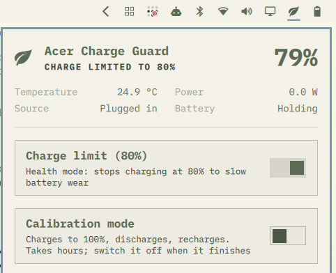

For Acer laptops on Omarchy
Stop at 80%.
Keep the battery.
Acer Charge Guard puts the firmware charge limit in your Omarchy bar. One click holds the battery at 80% while you're plugged in all day, and calibration is there when the gauge drifts.
omarchy plugin add https://github.com/zhines-labs/acer-charge-guard --enable
- Temperature
- 31.0 °C
- Power
- 0.0 W
- Source
- Plugged in
- Battery
- Holding
A laptop on a desk is a battery at 100% all day
Lithium-ion cells wear faster when they sit at a high charge, and faster again when they're warm. A laptop that stays plugged in keeps its battery near full for hours at a time, which is the worst place for it to rest.
Many Acer laptops can stop charging at 80% in firmware. Acer's own app for this only runs on Windows. On Linux, the acer-wmi-battery driver gives you that switch, and this plugin puts it in your bar.

What's in the panel
Turns the firmware 80% limit on or off. The bar icon is a leaf while the limit is on.
Runs the firmware's full charge-discharge-charge cycle so the percentage reads true again. It won't start on battery power, and the limit stays off until you stop it.
Battery temperature, charger or battery, and charge rate in watts: + going in, − coming out.
Changes go through pkexec. Only health_mode and calibration_mode can be written, and only with 0 or 1.
# What the widget reads every few seconds (values are the driver's raw units) $ grep -H . /sys/bus/wmi/drivers/acer-wmi-battery/*_mode .../health_mode:1 # 1 = stop at 80% .../calibration_mode:0 $ cat /sys/bus/wmi/drivers/acer-wmi-battery/temperature 31000 # millidegrees → 31.0 °C $ cat /sys/class/power_supply/BAT1/{current_now,voltage_now} 1250000 # µA 12600000 # µV → 1.25 A × 12.6 V = 15.8 W
Install
Install the kernel driver
It's in the AUR as a DKMS package, so it rebuilds when your kernel updates.
omarchy pkg aur add acer-wmi-battery-dkms
sudo modprobe acer-wmi-battery
Add the plugin
Omarchy clones it into
~/.config/omarchy/plugins/and turns it on.omarchy plugin add https://github.com/zhines-labs/acer-charge-guard --enable
Put it on the bar
Add Acer Charge Guard from the shell settings, under System. Or move it with
omarchy bar.
If the panel says acer-wmi-battery not loaded, check lsmod | grep acer_wmi_battery. Not every Acer model has the charge limit in firmware.
Bind it to a key
Every action is an IPC method:
| Method | Does |
|---|---|
toggleHealth | 80% limit on or off |
toggleCalibration | Start or stop calibration |
toggle | Show or hide the panel |
-- ~/.config/hypr/bindings.lua
o.bind("SUPER + SHIFT + B",
"Toggle battery limit",
"omarchy-shell io.github.zhines-labs.acer-charge-guard toggleHealth")
Questions
Does the limit survive a reboot?
That's up to your laptop's firmware. Some models keep it, some reset it. If yours resets, turn it back on from the bar after boot, or bind toggleHealth to a key.
Why can't I start calibration on battery?
Calibration charges to 100%, drains, and charges again. The firmware needs the charger for that, so the panel won't start it until you plug in.
Why can't I turn the limit on during calibration?
The two modes fight each other: one stops at 80%, the other needs 100%. Stop calibration first, then switch the limit back on.
Why does Power show 0.0 W?
When the limit is holding at 80% and you're plugged in, the battery is neither charging nor draining. Unplug the charger and you'll see the draw.
Is this made by Acer?
No. It's a community plugin built on the community acer-wmi-battery driver. Acer is a trademark of Acer Inc. and is named here only to say which laptops it works with.